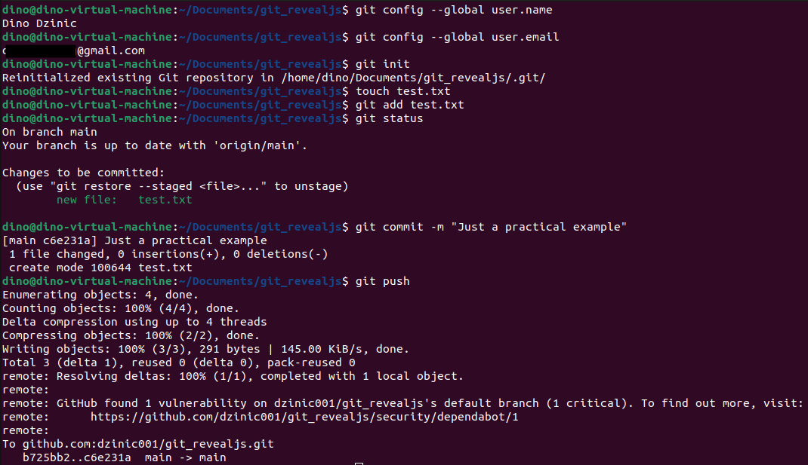

Versionssysteme

Hauptaufgaben
- Protokollierung
- Wiederherstellung
- Archivierung
Arten von Versionssystemen
- Lokale Versionsverwaltung
- Zentrale Versionsverwaltung
- Verteilte Versionsverwaltung
Github
- www.github.com
- Entwickelt: 2008
- Sitz: USA
- Betreiber: Microsoft (seit 2018)
- Benutzer: 83 Milionen
- Über 200 Millionen Repositories (stand 2022)
Github-Copilot
- AutoVervollständigen-Vorschläge
- 55% mehr Produktivität
- VS Code Extension
 https://github.com/dzinic001/git_revealjs
https://github.com/dzinic001/git_revealjs
Commits
Branching
Pull-Requests
Erste Schritte
Branching

$ git branch
$ git switch
$ git commit
$ git merge
Ablauf
- Repository klonen
- Themenbranch erstellen
- Änderungen vornehmen
- Commit(s)
- Push
- Pull Request
Pull Request
informiert über die Veränderungen am Code und gibt sie zur Review frei
GitHub Pull RequestsDanke für die Aufmerksamkeit!
Quellen
- Wikipedia-Autoren. (2023, 22. Oktober). GitHub. In Wikipedia – Die freie Enzyklopädie. https://de.wikipedia.org/w/index.php?title=GitHub&oldid=238396332
- Senarclens de Grancy, G. (n.d.) Git. In: DVC. https://www.senarclens.eu/~gerald/presentations/dvc/#(6)
- Wikipedia-Autoren. (2022, 24. September). Versionsverwaltung. In Wikipedia – Die freie Enzyklopädie. https://de.wikipedia.org/w/index.php?title=Versionsverwaltung&oldid=226425173
- https://docs.github.com
- Cottle, P. (2023). learnGitBranching. Github. https://github.com/pcottle/learnGitBranching
- Chacon, S., & Straub, B. (2014). 3.2 Git Branching - Einfaches Branching und Merging. In Pro Git. Apress.https://git-scm.com/book/de/v2/Git-Branching-Einfaches-Branching-und-Merging
- Chacon, S., & Straub, B. (2014). 6.2 GitHub - Mitwirken an einem Projekt. In Pro Git. Apress.https://git-scm.com/book/de/v2/GitHub-Mitwirken-an-einem-Projekt
- About Pull Requests. (n.d.). GitHub Docs. https://docs.github.com/en/pull-requests/collaborating-with-pull-requests/proposing-changes-to-your-work-with-pull-requests/about-pull-requests